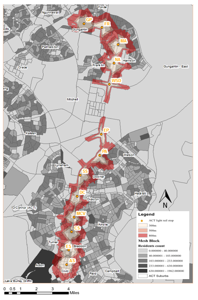

Exploring Accessibility and Network Analysis for Urban Transportation Planning: A Case Study in Canberra
As part of an academic project, I conducted a geospatial and network analysis of the accessibility of the proposed stops along the Stage 1 ACT light rail system. The purpose of this project was to evaluate the potential of the light rail system in providing efficient and cost-effective transportation options to the population within its catchment area. Using Geographic Information System (GIS) software and publicly available data such as the Australian Bureau of Statistics (ABS) Census data, I analyzed the distance between the proposed light rail stops and their catchment population. I also conducted a network analysis of the existing bus stops and their accessibility to the light rail stops to identify potential areas of overlap and potential for improved connectivity. The results of the accessibility analysis indicated that the percentage of population within a 300-meter radius of the proposed light rail stops that would be likely to use the service based on distance as an impedance was small. This suggests that the location of some of the stops may not provide a feasible transportation alternative. However, it is important to note that this analysis did not take into account factors such as income, spatial behavior of the population, ticket prices, and other dimensions of accessibility such as availability and acceptability.
The network analysis revealed potential areas of overlap between the existing bus stops and the proposed light rail stops, indicating a potential for improved connectivity. However, a more detailed network analysis incorporating factors such as frequency and reliability of existing bus services and potential light rail services would be needed for a more accurate assessment Through this project, I gained valuable experience in conducting geospatial and network analyses and learned to use tools such as ArcGIS, QGIS, and Network Analyst. While this project provides useful insights into the accessibility of the proposed light rail system, further research is needed to comprehensively evaluate the efficacy of transportation systems in Canberra.
In conclusion, this academic project evaluated the accessibility of the proposed stops along the Stage 1 ACT light rail system and conducted a network analysis to identify potential areas of overlap and improved connectivity. The results suggest the need for further research to consider a wider range of factors that influence accessibility and transportation choices.